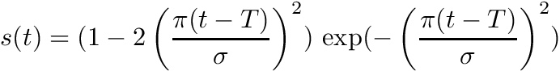
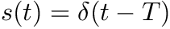
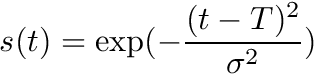
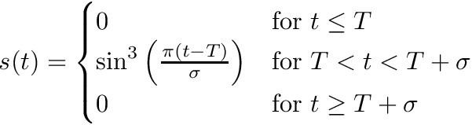

|
Ses3d-NT
simulation of elastic wave propagation in spherical sections
|
Here we provide you a short introduction in writing a configuration file for Ses3d-NT. The config file is separated into groups using Fortran NAMELISTs. Each segment starts with the & character (ampersand) followed by a group- keyword, i.e. &model. Each group ends with the / character (slash). A group encloses a sequence of parameter names along with their values. Admissible groups with corresponding parameter names and values are listed in the following.
Remark:
Comments are indicated by the !-sign. A Value must not be followed by a !-sign.
In group &grid the simulation's extends are defined. nx, ny and nz are specifying the total number of elements in each direction. lpd defines the degree of the Lagrange polynomials. pml width of the tapering boundary region
&grid
nx = 16 ! Number of elements in theta-direction
ny = 26 ! Number of elements in phi-direction
nz = 11 ! Number of elements in r-direction
lpd = 4 ! Lagrange-Polynomial degree
pml = 3 ! Width of relaxing boundaries (elements)
/
All five parameters are mandatory.
The group 'time' starts the segment specifying time evolution.
&time
nt = 700 ! Number of time-steps
dt = 0.75 ! Time-increment
date_time = 2011, 2, 24, 0, 10, 15, 0, 0 ! yyyy, mm, dd, dm_GMT, h, m, s, ms
/
Parameters 'nt' and 'dt' are mandatory. The optional parameter 'date_time' defines the start time of synthetics.
In this group you have to specify the general parameters. The parameter workflow may take one of the following strings:
&general
workflow = 'forward' ! defined in main program max 16 chars
event_name = 'MESS-fwd' ! optional max 16 chars
log_file_dir = './log/' ! optional path to save log-files
/
The 'model' group is highly bond to the parameter workflow in the 'general' group! Following combinations are possible:
&model
lat_min = -7.5, lat_max = 7.5,
lon_min = -5.0, lon_max = 20.0,
rad_min = 5371000.0, rad_max = 6371000.0,
model_type = 2
/
&model
lat_min = -7.5, lat_max = 7.5,
lon_min = -5.0, lon_max = 20.0,
rad_min = 5371000.0, rad_max = 6371000.0,
rhoinv = './rhoinv'
lambda = './lambda'
mu = './mu'
a = './a'
b = './b'
c = './c'
q = './q'
/
The above sections must occur only once in the parameter file. The following groups may occur multiple times.In 'source' groupe we specify a source to excite the simulation. A source must be defined by its position, time-evolution and either a vector specifying a monopole force or a moment -tensor for double couples.
&source
lat =
lon =
depth =
wavelet = 'RICKER', onset = 150.0, width = 120.0
!direction = 1.0 0.0 0.0 ! x, y, z
moment_tensor = 0.0 0.0 0.0 0.0 1.0e19 0.0
/
A moment tensor is expressed in its 6-component form. It needs to be given in the following order: M_xx M_xy M_xz M_yy M_yz M_zz
There are multiple choices for specifying the source wavelet. Four of them compute a wavelet based on simulation's parameters.




Observables to output are selected, using the attribute keyword. This can be multiples out of:
The 'receiver' keyword instructs Ses3d-NT to take a time-sample-trace at the specified location.
&receiver
network = 'GRSN' ! optional, default is 'Sed3d-NT'
station = 'XX22abc'
location = 'XYZ' ! optional
lat = 0.0
lon = 12.5
depth = 0.0
attributes = 'vx', 'vy', 'vz' ! at least one
override = .FALSE. ! optional, default is .FALSE.
/
'network', 'station', 'location' can be specified with up to 8 ASCII characters and must be surrounded by quotes. 'lat', 'lon' and 'depth' must be floating point numbers. Output-files are written when the simulation completes.The output filename convention is [network].[station].[location].[attribute].sac.
The ouput_? keywords instruct Ses3d-NT to take a series of 3d volume snapshots for specified parameters. The output-file is written asynchronously, while next time-steps are processed.
&output_raw
timestep_start = 0 ! optional, default is 0
timestep_increment = 10
timestep_stop = 700 ! optional, default is nt
override = .TRUE. ! optional, default is .FALSE.
attributes = 'vx', 'vy', 'vz'
prefix = './'
/
&ouput_netcdf
timestep_start = 0 ! optional, default is 0
timestep_increment = 10
timestep_stop = 1000 ! optional, default is nt
attributes = 'vx', 'vy', 'vz'
prefix = './'
/
'timestep_start' must be an integer and could be in the range between 0 and nt-1 ('nt' is specified in time-group). 'timestep_end' is an integer and may take values bigger than timestep_start+1. 'timestep_increment' is a positive whole number greater than 0. The filename convention is [attribute]_[timestep].vol.